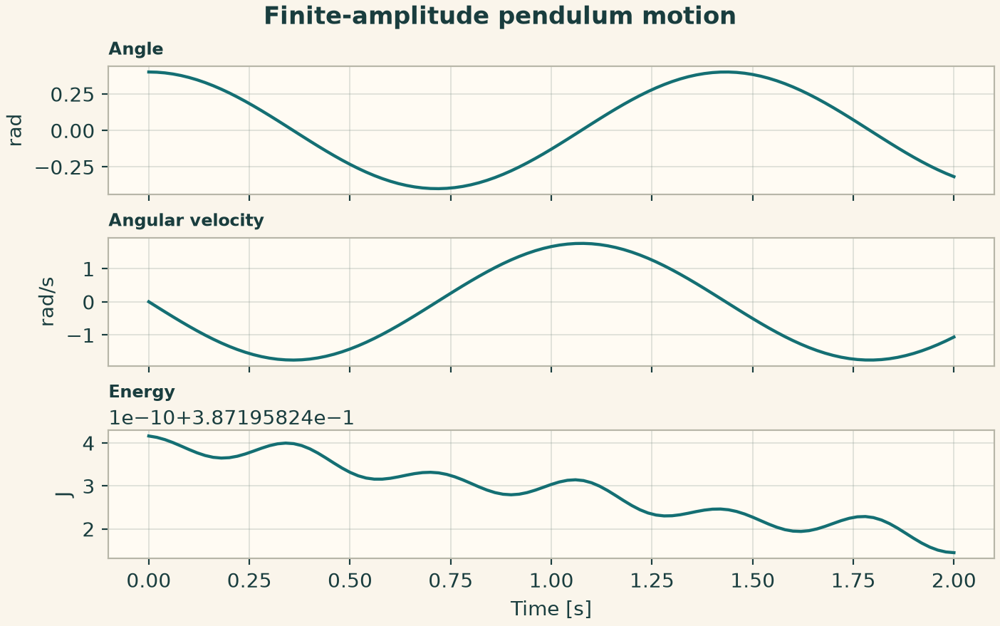
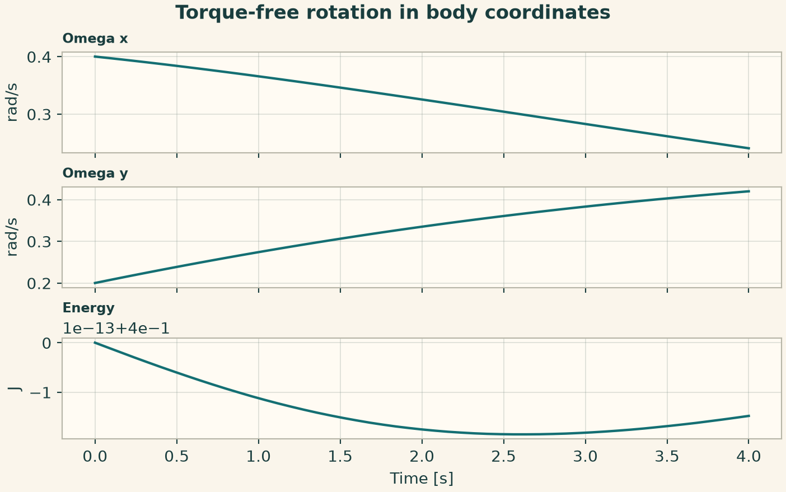
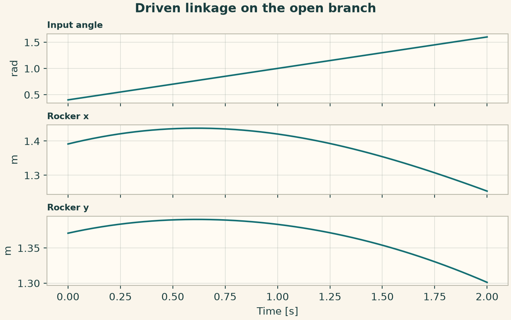
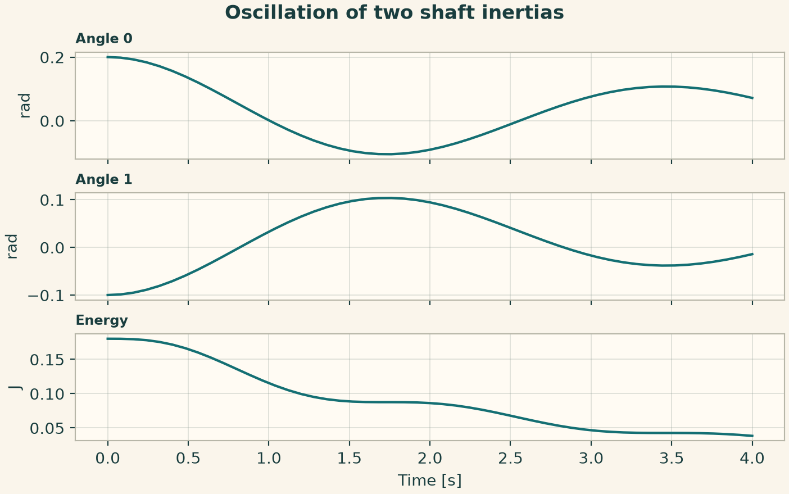
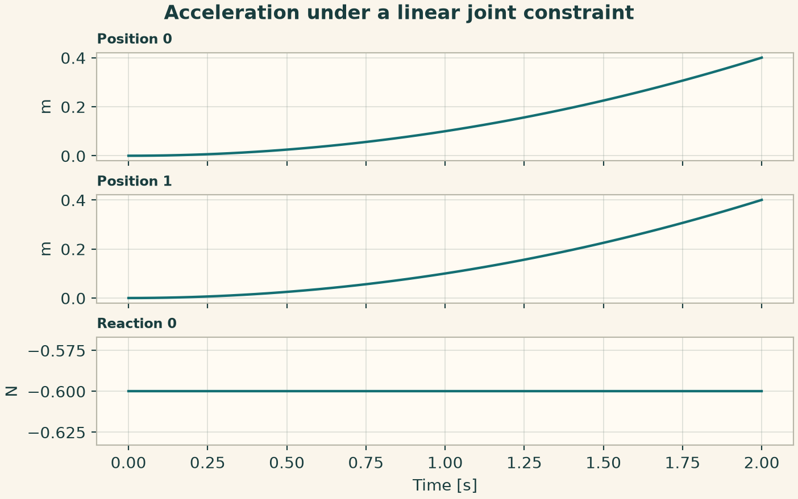
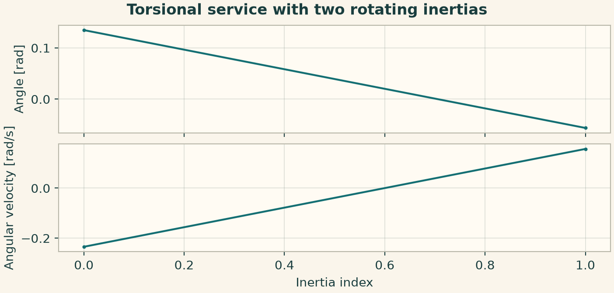
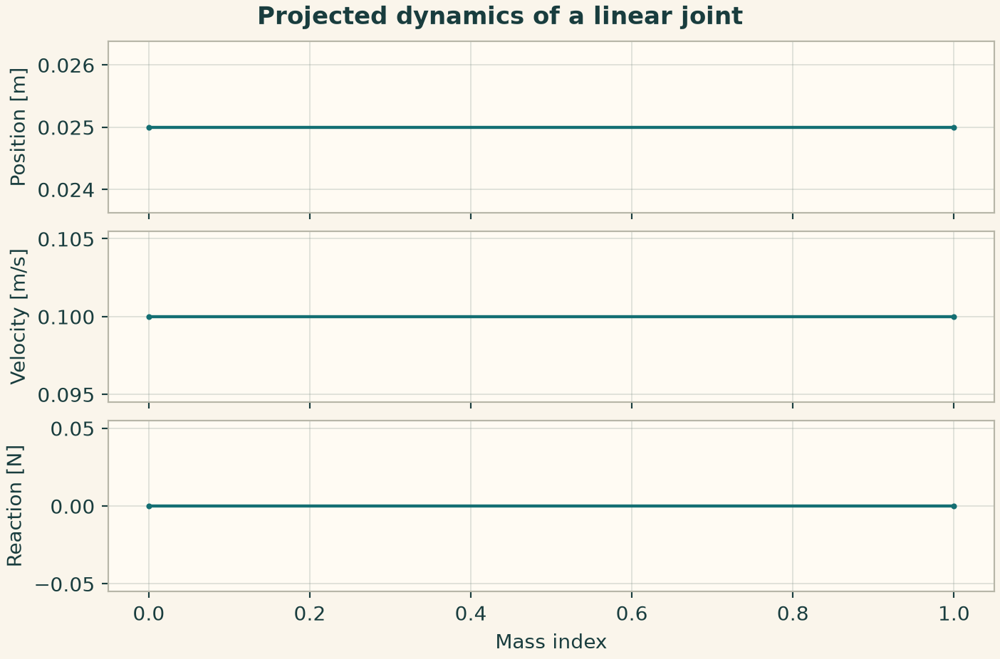
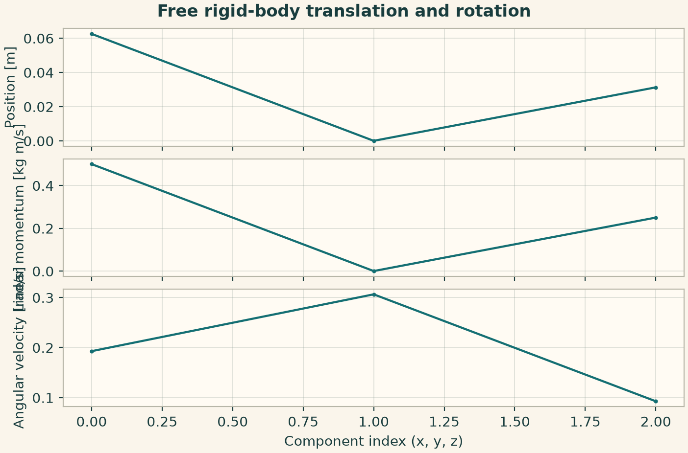
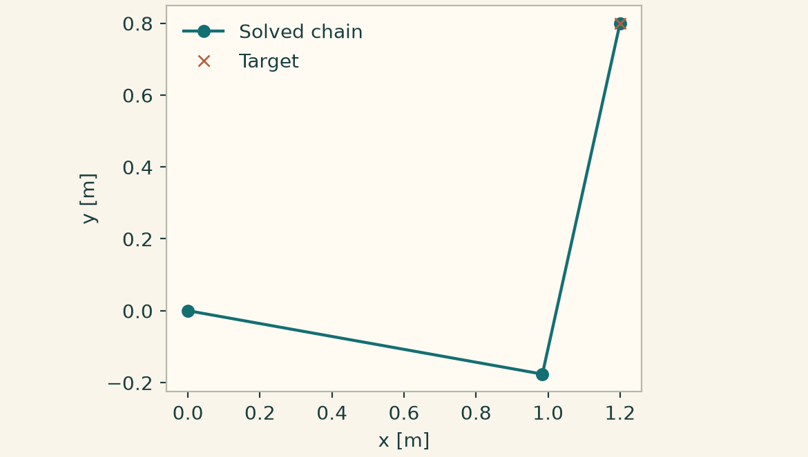
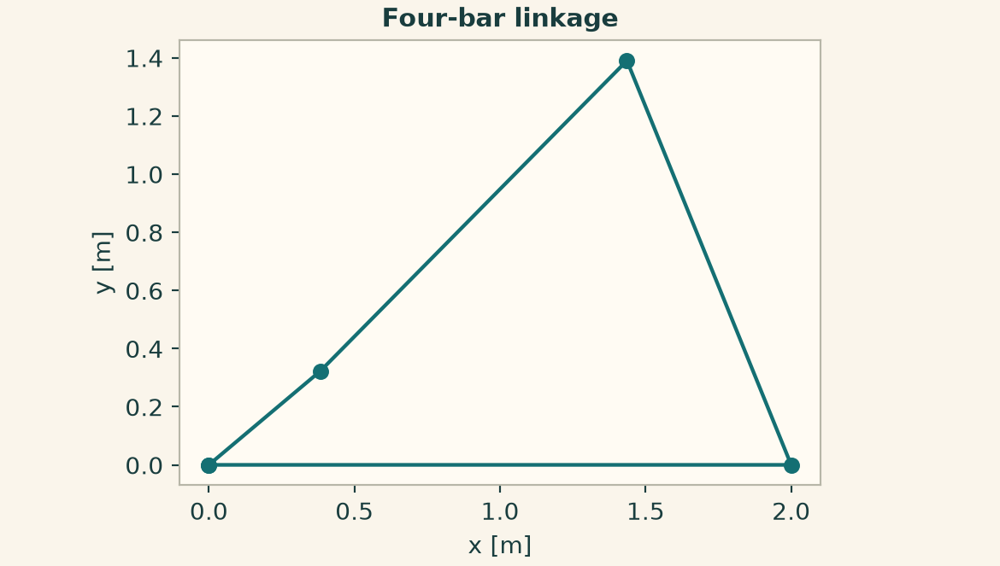

Docs › Worked physics and service recipes › Multibody dynamics recipes
6.14 Multibody dynamics recipes
This section includes the field-based declarations and the independently callable multibody dynamics service configurations. The configuration keys in the service recipes belong to the indicated provider.
6.14.1 Finite-amplitude pendulum motion
The angular state is integrated directly. Energy remains constant in the unforced case, even when the motion departs from a small-angle approximation.
from onesim.physics.multibody import SimplePendulum
domain = LumpedDomain()
model = SimplePendulum(
domain=domain.system,
length=0.5,
)
t, data = history_case(
domain,
model,
dict(angle=0.4, angular_velocity=0.0),
("angle", "angular_velocity", "energy"),
end=2,
dt=0.005,
)
np.testing.assert_allclose(data["energy"], data["energy"][0], atol=1e-8)
fig = history_plot("Finite-amplitude pendulum motion", model, t, data)
plt.show()

6.14.2 Torque-free rotation in body coordinates
The inertia tuple contains the principal moments. Inspect two body-axis angular velocities and check that the rigid body's kinetic energy is conserved.
from onesim.physics.multibody import EulerTop
domain = LumpedDomain()
model = EulerTop(
domain=domain.system,
inertia=(2, 3, 4),
)
t, data = history_case(
domain,
model,
dict(omega_x=0.4, omega_y=0.2, omega_z=0.3),
("omega_x", "omega_y", "energy"),
end=4,
dt=0.02,
)
np.testing.assert_allclose(data["energy"], data["energy"][0], atol=1e-9)
fig = history_plot("Torque-free rotation in body coordinates", model, t, data)
plt.show()

6.14.3 Driven linkage on the open branch
Supply the four link lengths, an assembly branch and a crank speed. Track the crank angle and the output rocker position.
from onesim.physics.multibody import DrivenFourBar
domain = LumpedDomain()
model = DrivenFourBar(
domain=domain.system,
ground_length=2,
crank_length=0.5,
coupler_length=1.5,
rocker_length=1.5,
drive_speed=0.6,
assembly_branch="open",
)
t, data = history_case(
domain,
model,
dict(input_angle=0.4),
("input_angle", "rocker_x", "rocker_y"),
end=2,
dt=0.01,
)
np.testing.assert_allclose(data["input_angle"], 0.4 + 0.6 * t, atol=1e-9)
fig = history_plot("Driven linkage on the open branch", model, t, data)
plt.show()

6.14.4 Oscillation of two shaft inertias
Start with a twist across the shaft and apply no external torque. Damping reduces the total mechanical energy while exchanging angular momentum.
from onesim.physics.multibody import TorsionalDrivetrain
domain = LumpedDomain()
model = TorsionalDrivetrain(
domain=domain.system,
inertias=(2, 3),
shaft_stiffness=(4,),
shaft_damping=(0.5,),
external_torques=(0, 0),
)
t, data = history_case(
domain,
model,
dict(angle_0=0.2, angle_1=-0.1, omega_0=0.0, omega_1=0.0),
("angle_0", "angle_1", "energy"),
end=4,
dt=0.02,
)
assert data["energy"][-1] < data["energy"][0]
fig = history_plot("Oscillation of two shaft inertias", model, t, data)
plt.show()

6.14.5 Acceleration under a linear joint constraint
Constrain the two positions to coincide and apply a force to only one mass. Start with a compatible position and velocity and inspect the constraint reaction.
from onesim.physics.multibody import LinearJointSystem
domain = LumpedDomain()
model = LinearJointSystem(
domain=domain.system,
masses=(2, 3),
constraint_matrix=((1.0, -1.0),),
constraint_targets=(0.0,),
forces=(1.0, 0.0),
)
t, data = history_case(
domain,
model,
dict(position_0=0.0, position_1=0.0, velocity_0=0.0, velocity_1=0.0),
("position_0", "position_1", "reaction_0"),
end=2,
dt=0.01,
linear_solver=SparseDirect(),
)
np.testing.assert_allclose(data["position_0"], data["position_1"], atol=1e-10)
fig = history_plot("Acceleration under a linear joint constraint", model, t, data)
plt.show()

6.14.6 Torsional service with two rotating inertias
Configure a finite final time, an initial shaft twist and damping. The output is indexed by inertia rather than by spatial coordinate.
from onesim.physics.multibody import DrivetrainConfiguration, DrivetrainPublicApi
settings = dict(
inertias=(2.0, 3.0),
shaft_stiffness=(4.0,),
shaft_damping=(0.5,),
initial_angles=(0.2, -0.1),
final_time=0.5,
time_step=0.01,
)
result = run_service(
DrivetrainPublicApi(), DrivetrainConfiguration(parameters=settings)
)
fig = service_figure(
"Torsional service with two rotating inertias",
np.arange(2),
"Inertia index",
("Angle [rad]", result.angles),
("Angular velocity [rad/s]", result.angular_velocities),
)
plt.show()

6.14.7 Projected dynamics of a linear joint
Supply a compatible constrained state and choose projection enforcement. The endpoint positions and velocities must satisfy the same linear relation.
from onesim.physics.multibody import JointSystemsConfiguration, JointSystemsPublicApi
settings = dict(
masses=(2.0, 3.0),
constraint_matrix=((1.0, -1.0),),
constraint_targets=(0.0,),
external_force=(1.0, 0.0),
initial_positions=(0.0, 0.0),
initial_velocities=(0.0, 0.0),
final_time=0.5,
time_step=0.01,
)
result = run_service(
JointSystemsPublicApi(), JointSystemsConfiguration(parameters=settings)
)
fig = service_figure(
"Projected dynamics of a linear joint",
np.arange(2),
"Mass index",
("Position [m]", result.positions),
("Velocity [m/s]", result.velocities),
("Reaction [N]", result.reaction_forces),
)
plt.show()

6.14.8 Free rigid-body translation and rotation
An external force and principal inertias advance the six-degree-of-freedom state. The service also returns a quaternion and a rigid transform.
from onesim.physics.multibody import (
RigidBodyDynamicsConfiguration,
RigidBodyDynamicsPublicApi,
)
settings = dict(
mass=2,
inertia=(2.0, 3.0, 4.0),
external_force=(1.0, 0.0, 0.5),
initial_angular_velocity=(0.2, 0.3, 0.1),
final_time=0.5,
time_step=0.01,
)
result = run_service(
RigidBodyDynamicsPublicApi(), RigidBodyDynamicsConfiguration(parameters=settings)
)
fig = service_figure(
"Free rigid-body translation and rotation",
np.arange(3),
"Component index (x, y, z)",
("Position [m]", result.position),
("Linear momentum [kg m/s]", result.linear_momentum),
("Angular velocity [rad/s]", result.angular_velocity),
)
plt.show()

6.14.9 Inverse kinematics of a two-link chain
Provide a reachable Cartesian target and an initial branch seed. Plot the solved joint positions and verify the end effector reaches the target.
from onesim.physics.multibody import KinematicsConfiguration, KinematicsPublicApi
target = np.array([1.2, 0.8])
configuration = KinematicsConfiguration(
parameters=dict(
link_lengths=(1.0, 1.0),
initial_joint_angles=(0.1, 0.8),
target_position=target,
)
)
result = run_service(KinematicsPublicApi(), configuration)
np.testing.assert_allclose(result.end_effector, target, atol=1e-8)
theme.use_theme()
fig, ax = plt.subplots(figsize=(6, 3.4), layout="constrained")
ax.plot(*result.joint_positions.T, "o-", label="Solved chain")
ax.plot(*target, "x", color=theme.COPPER, label="Target")
ax.set(xlabel="x [m]", ylabel="y [m]", aspect="equal")
ax.legend(frameon=False)
plt.show()

6.14.10 Four-bar service closure and transmission angle
Read the ground pivot, crank and rocker pin after solving the selected assembly branch. The coupler geometry is reconstructed from the returned pins.
from onesim.physics.multibody import MechanismsConfiguration, MechanismsPublicApi
configuration = MechanismsConfiguration(
parameters=dict(
ground_length=2.0,
crank_length=0.5,
coupler_length=1.5,
rocker_length=1.5,
initial_input_angle=0.4,
input_rate=0.6,
assembly_branch="open",
final_time=0.5,
time_step=0.01,
)
)
result = run_service(MechanismsPublicApi(), configuration)
assert result.closure_residual < 1e-9
vertices = np.stack(
((0, 0), result.crank_pin, result.rocker_pin, result.ground_pivot, (0, 0))
)
theme.use_theme()
fig, ax = plt.subplots(figsize=(6, 3.4), layout="constrained")
ax.plot(*vertices.T, "o-")
ax.set(xlabel="x [m]", ylabel="y [m]", aspect="equal", title="Four-bar linkage")
plt.show()
